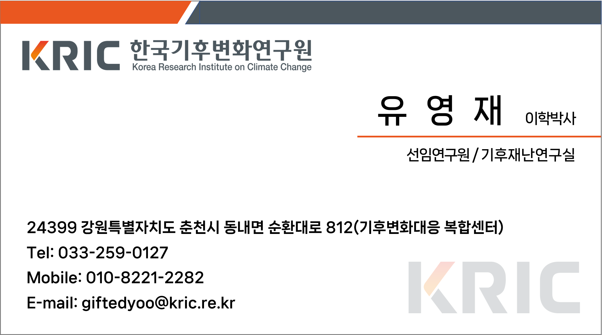

Climate Change Adaptation
기후변화 영향과 취약성, 적응정보를 분석하고 기후위기 적응계획과 정책 의사결정을 지원하는 체계와 전략을 연구합니다.
CLIMATE CHANGE ADAPTATION · ECOLOGICAL CONSERVATION · PLANNING AND POLICY
기후위기에 따른 적응, 재난·재해 대응, 생태계 보전 등과 관련된 계획 및 정책을 연구합니다.
과학적 근거를 정책과 계획으로 연결해 더 회복력 있는 미래를 만드는 연구를 지향합니다.
CURRENT POSITION
PROFESSIONAL EXPERIENCE
EDUCATION
기후변화가 자연환경과 사회에 미치는 영향을 분석하고, 실질적인 정책 수단과 적응 전략으로 연결합니다.
기후변화 영향과 취약성, 적응정보를 분석하고 기후위기 적응계획과 정책 의사결정을 지원하는 체계와 전략을 연구합니다.
자연환경·인간·기반시설 등에서 발생하는 기후 재난·재해 위험에 대한 위험요인과 영향을 분석하고 공간적으로 평가합니다.
생물다양성, 보호지역, 생태복원, 생태계서비스와 자연자본을 분석하고 생태계 보전·복원과 정책 활용방안을 연구합니다.
GIS와 위성영상 기반 공간분석, 종분포모형 등 다양한 모델링 기법을 활용해 환경·생태 변화와 공간적 패턴을 분석합니다.
HONORS & AWARDS

GET IN TOUCH